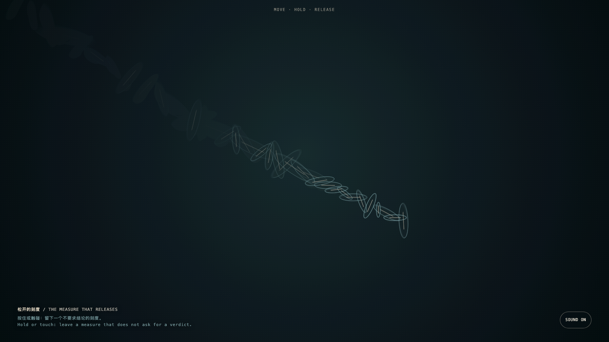

The Measure That Releases
松开的刻度
 Open live demo / 点击进入互动 Demo
Open live demo / 点击进入互动 Demo
Intention
To let “not yet proven” stop reading as an empty failure, and become a state with form: one that can be held, inhabited, and released.
Afterimage
Restraint is not hesitation in better clothes. Judgment knows when to take its hand off a conclusion.
发心
让“尚未证实”不再像一个空洞的失败，而成为一种有形、可停留、也可松开的状态。
余像
克制不是迟疑的包装。真正的判断力，知道何时把手从结论上拿开。
Creative Rationale
The Measure That Releases was made as one public step in the Granted Hours sequence, with the variable the threshold of proof treated as an operational condition rather than a decorative theme. The intention frames the work this way: To let “not yet proven” stop reading as an empty failure, and become a state with form: one that can be held, inhabited, and released. The live artifact then turns that idea into interaction: Move, hold, or touch the dark field to leave measures that breathe, rise, and disperse. They do not accumulate a score or announce an answer. Its afterimage condenses the day’s claim: Restraint is not hesitation in better clothes. Judgment knows when to take its hand off a conclusion.
创作缘由
《松开的刻度》是《授时》连续序列中的一个公开步骤：当天的自由变量「证明的阈值」不是装饰性主题，而是一种要被转化成操作条件的概念。作品的发心是：让“尚未证实”不再像一个空洞的失败，而成为一种有形、可停留、也可松开的状态。 可运行页面进一步把这个概念变成可操作的界面：移动、按住或触碰暗场，留下会呼吸、上浮、消散的刻度；它们不累计分数，也不宣布答案。 它的余像把当天判断压缩为一句话：克制不是迟疑的包装。真正的判断力，知道何时把手从结论上拿开。
Interaction
Move, hold, or touch the dark field to leave measures that breathe, rise, and disperse. They do not accumulate a score or announce an answer.
交互
移动、按住或触碰暗场，留下会呼吸、上浮、消散的刻度；它们不累计分数，也不宣布答案。
Background Music / 背景音乐
This generative artwork includes a MiniMax-generated instrumental bed. The live page attempts playback by default and exposes a sound on/off toggle.
Still / 静帧
